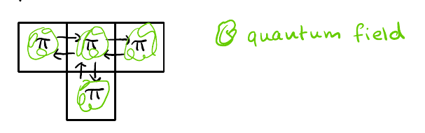
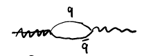
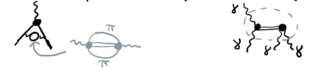
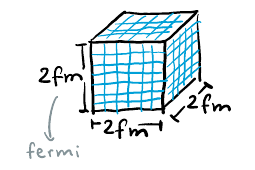
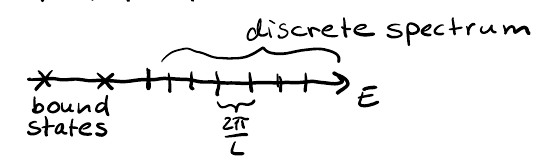
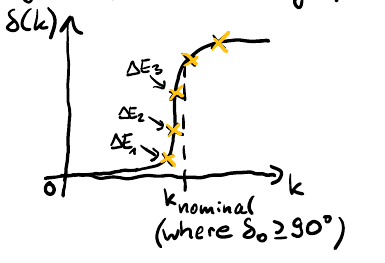

(2025) Lecture 13
Presenter: Mikhail Mikhasenko
Note Taker: Anna Zimmer
1 Hadronic Contributions to g-2 and Euclidean Time Dependence
The two terms in g-2 that receive hadronic contributions are:
- Hadronic vacuum polarization (HVP)
- Hadronic light-by-light (HLbL)
| Contribution | Description |
|---|---|
| Hadronic vacuum polarization (HVP) | Dresses the photon propagator and changes the vertex. (Diagram: muon – solid line, photon – wavy line.) |
| Hadronic light-by-light (HLbL) | Hadrons (e.g., pions, kaons, \eta , \eta' ) enter in a loop. |

Mesons with a strong two-photon coupling dominate. |


In the vacuum polarization diagram, the solid line is the muon and the wavy line is the photon. The diagram shows how the muon is probed by the photon. The object that dresses the photon and modifies the vertex constitutes the hadronic vacuum polarization.
For the hadronic light-by-light contribution, particles such as pions or kaons appear in a loop. The contributions that dominate come from mesons that couple strongly to two photons, notably \eta and \eta' — all mesons with a strong two-photon coupling. It is important to realize this.

Hadron physics provides the input for precision physics, specifically for g-2 . It is very important to obtain g-2 to ten digits; an experiment has been measured to that precision. However, theoretical calculations rely on an understanding of these vertices and of what occurs inside the HVP and HLbL blocks. These days there is less discussion of the hadronic light-by-light contribution, and the main uncertainty comes from the hadronic vacuum polarization.
Q: What is the time dependence of correlation functions computed on the lattice after transforming Minkowski space to Euclidean space?
A: The expectation value between the vacuum and any non‑vacuum state \langle 0 | O_i(t) | n \rangle has an exponentially falling dependence on time. In the Heisenberg representation, the time dependence of an operator is given by
\frac{dO}{dt} = i [O, H],
and when we go to Euclidean space via t \to -i t_E , the Hamiltonian transforms as H \to -i H_E , so the equation becomes
\frac{\partial O}{\partial t} = [O, H_E].
Consequently, the time dependence of the matrix element becomes
\langle 0 | O_i(t) | n \rangle = e^{-E_n t} \langle 0 | O_i(0) | n \rangle .
| Minkowski | Euclidean | |
|---|---|---|
| Time transformation | — | t \to -i t_E |
| Hamiltonian | H | -i H_E |
| Heisenberg equation | \displaystyle \frac{dO}{dt} = i [O, H] | \displaystyle \frac{\partial O}{\partial t} = [O, H_E] |
| Matrix element time dependence | — | \langle 0 | O_i(t) | n \rangle = e^{-E_n t} \langle 0 | O_i(0) | n \rangle |
2 Bound States and Continuum in the Pöschl–Teller Potential
The differential equation can be solved numerically, but several potentials allow a closed‑form solution. Examining one such case provides insight. The energy E is a fixed parameter in the differential equation — we fix it and then solve the equation. To investigate a system with a given potential, we fix the energy (equivalently the breakup momentum, because they are one‑to‑one related) and solve for the wave functions that satisfy it.
We can also treat the energy as a parametric variable and ask: for which energy values does the equation have a solution? This reveals the possible regimes or allowed energy values of the system.
Let us examine a potential with a closed‑form solution: the Pöschl–Teller potential
V(x)=-\frac{U_0}{\cosh^2(\alpha x)}.
This potential is convenient because it yields a closed form — the physics can be visualized quickly. By a change of variables we obtain an analytic, nearly closed‑form expression for the wave function. The solution involves hyperbolic cotangents and is given by the hypergeometric function, which is implemented in Mathematica, Python, Julia, etc. Hence we can plot everything.
The potential has two parameters: the depth U_0 and the width controlled by \alpha (larger \alpha means a narrower well). Many interesting physical phenomena arise depending on these two parameters.
In the scattering problem, the equation has solutions only for certain energy values — not every energy yields a satisfactory wave function. One condition that excludes certain values is the asymptotic condition: the wave function must be finite, with no exponential growth.
The asymptotic forms are written as:
(-\frac{d^2}{dx^2}+V(x))\psi=E\psi
\psi(x)\sim e^{ikx}+r e^{-ikx}\quad(x\to-\infty),\qquad \psi(x)\sim t e^{ikx}\quad(x\to+\infty).
Far from the well these are good approximations. For the Pöschl–Teller potential, we solve by mapping the differential equation directly to a known equation for a special function.
The key point is how the energy spectrum emerges. We take the equation, substitute the ansatz, and find the condition on k such that the wave function does not grow exponentially at either infinity. Exponential behavior appears when ik becomes real, i.e., when the energy is below zero.
Consider the potential well: V=0 asymptotically. For E>0 we have a continuum; for E<0 , k becomes imaginary and one of the exponentials blows up. To avoid that asymptotically, we must set certain terms to zero. This gives the normalization condition for the wave function — we require a finite, oscillatory‑type wave function.
This picture directly relates to the energy spectrum.

| Regime | Energy range | Nature of solutions |
|---|---|---|
| Continuum | E>0 | All energies allowed, any E>0 yields a solution |
| Bound states | E<0 | Solutions only at discrete energy values |
A bound state is trapped in the well. Its wave function oscillates inside and has exponentially suppressed tails outside.
The number of bound states in the well is determined by an equation involving an integer N . If the well is very deep ( U_0 large), the relevant term in that equation is large, so N can take many integer values (e.g., 0,1,2,3,4 ) — many levels exist. As the well becomes deeper, more states (more poles) appear.
The number of bound states is always finite, because levels much lower than the bottom of the well cannot exist. Also, if the well is narrower (larger \alpha ), fewer states fit — \alpha appears in the denominator. The energy of bound states is always negative and limited by U_0 .
3 Scattering Phase Shifts and Finite-Volume Spectra
When dealing with symmetric potentials, we can use the cosine and sine basis instead of the plane wave basis. For even wave functions (positive parity), we look for solutions with positive energy. The potential well is localized in a region of radius R . Outside the well, where the potential is zero, the Schrödinger equation becomes \psi'' + E \psi = 0 , with E = k^2 , and the solution asymptotically behaves as \psi(x) \sim \cos(kx + \delta_0) . This satisfies the equation because the second derivative brings down -k^2 , canceling the term from the energy. The phase shift \delta_0 does not spoil the solution; it asymptotically reflects the properties of the potential even though the potential is localized. This is the essence of scattering theory: a plane wave sent from minus infinity emerges as a plane wave with a slightly different phase, encoding the potential’s effects.
Essence of scattering theory: The asymptotic phase shift \delta_0 encodes the properties of a localized potential. A plane wave incident from -\infty emerges as a plane wave with a phase difference \delta_0 .
Intuitive picture: imagine a slider that tunes the depth of the well, U_0 . When U_0 \to 0 , the potential is flat and the plane wave with \delta_0 = 0 (i.e., \cos(kx) ) is a solution. As the well becomes deeper, the wave gets shifted. Inside the well the solution is not the same cosine; it is only asymptotically valid. On both sides, the period of the wave function is shifted by \delta_0 . The stronger the potential, the larger the asymptotic shift. To preserve symmetry, for x<0 we write \cos(k(-x)+\delta_0) .
Consider the poles as we change the potential depth. As the well becomes shallower, bound-state poles move towards the threshold and then “disappear” — but they do not disappear; they wrap around the branch point and appear on the other Riemann sheet as virtual states. When the attraction is not strong enough for a bound state, only virtual states exist; the attraction can still be felt, indicating virtual states. With sufficient depth, bound states appear: one, then two, and then more.
Resonances are phenomena where low-energy particles feel the attraction more strongly, leading to peaks in the scattering amplitude at certain energies. This particular potential (a simple well) does not produce resonances; resonance would be seen if the probability to pass through the well increased at specific energies. For low energies, the reflection coefficient changes with energy. A resonance corresponds to a strong dependence of reflection probability on frequency, and to poles in the transition amplitude in the complex plane.
Now consider solving the problem in a finite box of length L with periodic boundary conditions. This is an academic problem; the potential may not be solvable in closed form. The boundary conditions require the wave function and its derivative to match at x = L (periodic). These conditions dramatically change the phenomena. Periodic boundary conditions can be seen as mirroring the system an infinite number of times, like a lattice of repeated cells (discussed in a previous lecture).
We assume the well size is much smaller than L , so we can use asymptotic formulas at x = L . The first condition (periodicity of the function) is automatically satisfied because the wave function is symmetric; the second condition (periodicity of the derivative) is important. For positive energies, the boundary condition quantizes k : when \delta_0 = 0 , k = \frac{2\pi n}{L} . With the potential present, the allowed energies become discrete even above threshold. The branch cut starting from zero in the continuum is replaced by a set of poles: each allowed energy corresponds to a pole in the scattering amplitude. (see Figure 5) As L \to \infty , the distance between poles scales as 1/L , approaching the continuous limit. The term \delta_0 in the asymptotic form shifts the discrete spectrum in what used to be the continuum — a shift appears.
| Aspect | Infinite volume | Finite box (periodic, length L ) |
|---|---|---|
| Positive energy spectrum | Continuum ( E = k^2 , k \in \mathbb{R}^+ ) | Discrete: k = \frac{2\pi n}{L} + \text{shift from }\delta_0 |
| Analytic structure | Branch cut along positive real E -axis | Series of poles on real axis (infinitely many as L\to\infty ) |
| Scattering states | Asymptotic forms \cos(kx+\delta_0) | Same form used at x = L , but only discrete k allowed |

This shift is related to the potential depth: when U_0=0 , \delta_0=0 ; when the well is deeper, \delta_0 becomes significant. The entire spectrum, both below and above threshold, gets adjusted. This is the key idea for finite-volume scattering calculations: solve the Schrödinger equation numerically, look at asymptotic values, and extract \delta_0 . For non-solvable potentials, if you can perform a scattering experiment and only have access to the asymptotic form and energy spectrum, you can deduce the potential properties from the energy spectrum.
Procedure: First check what energies are possible with no interaction: a simple problem gives k = \frac{2\pi n}{L} . Then numerically compute the energies with interaction. By comparing the two spectra, you can deduce \delta_0 . \delta_0 itself depends on energy, so you probe it at different k values.
Quantum mechanics is well-taught, but connections to later topics like quantum field theory and hardware physics are not always clear. (see Figure 1) It is important to spell out these shared points. An intuitive picture: a finite box with periodic boundary conditions is like two marbles interacting on a ring. (see Figure 4) The lattice size is the circumference, and the variable x is the distance between the two marbles. The potential between them matches our setup. Periodic boundary conditions mean only the distance matters.
4 From Lattice Correlators to Resonance Phase Shifts
The correlation matrix computed on the lattice is given by
C_{ij}(t) = \langle 0 | O_i(t) O_j(0) | 0 \rangle = \sum_n e^{-E_n t} z_i^n z_j^{n*}.
Here i labels the operator. For example, with five operators one computes a 5 \times 5 matrix of correlations as a function of time. The correlation is expected to behave as a sum of exponentials; inserting a complete set of states yields a sum over n from the ground state to infinity.
4.1 Extracting the meson spectrum
To obtain the meson spectrum, one computes correlations of operators that create meson states. The operator is taken as
O \sim \bar{q} \Gamma q,
a combination of quark and antiquark fields. This operator contracts the fields to form a meson‑like object. Computing its correlation as a function of time and extracting the energies E_n gives the system’s energies, which correspond to the ground state and excited states of the meson system.
For example, using a u\bar{u} operator, the lowest energy extracted is the mass of the pion.
4.2 Ground state vs. excited states
Higher‑energy states decay faster. If one waits long enough, only the ground state remains. In the meson case this is fine; in the baryon case it becomes a problem.
To extract more information, a larger operator basis is used. The general eigenvalue problem for the correlation matrix C_{ij}(t) is considered. Diagonalizing the matrix at each time t yields eigenvalues. The diagonal elements of the diagonalized matrix give the time dependence of the excited states. This technique optimizes the overlap of operators and algorithms exist to reduce noise.
4.3 Finite volume and spin mixing (see Figure 4)
In a finite volume, rotational symmetry is broken. The lattice has a finite group of rotations, not SU(2) , so different spins mix. In practice, one computes the whole meson spectrum at once. The correlation matrix has huge dimensionality, with hundreds of sectors that couple and overlap – even non‑diagonal elements between different spins. Many (e.g., 30–40) energy eigenvalues are obtained and mapped to the masses of the mesons.
For the spectrum of light spin‑1 mesons, the operators have appropriate quantum numbers (e.g., J^{PC}=1^{--} for the \rho ), and you obtain one spectrum. For other quantum numbers, you need different operators.
4.4 Problem above the two‑pion threshold
The eigenvalue extraction method for single‑meson energies is not applicable above the two‑pion threshold. If you wait long enough, the correlation is dominated by the ground state of the system – the mass of the pion is easy to measure. Strictly speaking, when extracting energies above that threshold, one is measuring states of the two‑pion system, not single‑meson states.
Resonances such as the \rho and higher excited mesons are resonances in \pi\pi scattering, not bound states.
4.5 Alternative: meson‑meson operators and phase shift extraction
To study resonances, a different method is used. Operators that represent meson‑meson combinations are employed, e.g.,
O \sim \bar{q} \Gamma q \; \bar{q} \Gamma' q',
a four‑quark operator. The energy spectrum of the meson‑meson system is very rich and resembles what one sees in a finite box. (see Figure 5) When two particles are confined in a finite box, the energy spectrum is discrete. Above threshold, the levels are shifted by the interaction; the deviation from the non‑interacting spectrum gives the phase shift.
The idea is to compute all these levels (e.g., 1, 2, 3, 4, 5) and compare to predictions when the two particles do not interact.
The following table contrasts the two approaches:
| Aspect | Single‑meson operator method | Meson‑meson operator method |
|---|---|---|
| Operator type | \bar{q} \Gamma q | \bar{q} \Gamma q \; \bar{q} \Gamma' q' |
| Extracted quantity | Single‑particle energies | Energy levels of two‑meson system |
| Applicability | Below two‑particle threshold | Above threshold (resonances) |
| Relation to scattering | Not directly | Phase shift from level shifts |
4.6 Example: \pi\pi scattering in a P -wave
A classic example is \pi\pi scattering in a P -wave. The extracted phase shift shows a tangent‑like dependence characteristic of a resonance. For physical quark masses, the resonance peaks at the \rho mass. The pion mass is 140 MeV, not 300. The second threshold corresponds to K\bar{K} and to k=0 . The energy at which the phase shift passes through 90^\circ ( \pi/2 ) is 770 MeV — the nominal mass of the \rho meson.
4.7 General methodology
The method used today for hadron spectroscopy on the lattice is:
- Build a large basis of operators that create different mesons with different quantum numbers.
- Extract eigenvalues that give the energy spectrum of the two‑meson system.
- Compare the interacting spectrum with the non‑interacting one (zero potential).
- Deduce the phase shift \delta(k) for different momenta k from the shift \Delta E_n of each level.
- Plot \Delta E_n on an Argand diagram or as a function of the breakup momentum.
This procedure is accurate as long as all relevant channels are taken into account. From first principles, starting from the QCD Lagrangian, we obtain the spectrum of two‑particle scattering and the properties of the resonances.
Complications from coupled channels: As soon as the energy exceeds the K\bar{K} threshold, kaon channels must be included. The operator basis must also contain kaons, \eta , \eta' ; if above the 3\pi threshold, three‑pion operators are needed. The basis grows large and complicated, but the idea of using the difference between interacting and non‑interacting energy spectra remains the key.
4.8 Connection to experimental physics
Q: How difficult is it? Is it completely off? A: It’s fine, because we covered advanced quantum mechanics of correlation functions and eigenvalue problems. Not even advanced linear algebra. Specifically with the Hamiltonian. Interesting. (see Figure 6)
Different energy levels for a resonance have different shifts \Delta E_n . This enables one to map the phase shift. Experienced lattice field theorists, just looking at the spectrum, can already tell if a resonance is present. (see Figure 1) I consider this an important piece of knowledge because it is very closely connected to what we do in experimental particle physics.
The parametrization of \delta and its mapping to lattice quantities resembles the K -matrix formalism. The information extracted on the lattice is a point in certain representations.
Both lattice practitioners and experimental analysts work with similar quantities. Experiments extract phase shifts; lattice calculations extract cross sections. Both communities use parametrizations and scattering‑theory constraints. The complex plane remains relevant: lattice calculations alone do not give the properties of resonances. Further analysis involves parametrizing the phase shifts and extracting the pole position and couplings – this is the important information that goes into the PDG and is shared between experiments.